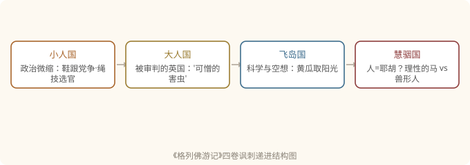

格列佛游记
| 作者 | 斯威夫特 |
|---|---|
| 成书/出版 | 1726-10-28匿名出版（Britannica） Gulliver's Travels — Encyclopaedia Britannica (by Ricardo Quintana)（百科全书） |
| 国别/地区 | 爱尔兰 |
| 时代 | 近代 · 18世纪 |
| 体裁 | 长篇小说（讽刺游记） |
| 语言 | 英语 |

二、创作背景
出版时匿名（Britannica：Published anonymously October 28, 1726, as Travels into Several Remote Nations of the World），以'外科医生格列佛'的游记口吻写成——虚构真实感的装置（地图、账目、航海日志式语言）。
四卷结构：小人国（Lilliput）、大人国（Brobdingnag）、飞岛国（Laputa）与慧骃国（Houyhnhnms）——尺度从'人类缩小'到'人类放大'再到'人类被理性马替换'，层层推进的讽刺手术（Britannica 四卷要点）。
接受的双面性：因想象力被当儿童读物、因锋利被删改（各卷改动），原意的政治讽刺在流传中被'驯化'（通说，版本史待核）。
三、内容脉络
第一卷·小人国：格列佛海难后被不到六英寸高的小人缚住（Britannica：tied up by people under 6 inches tall）——宫廷政治的微缩讽刺：高跟党与低跟党之争（鞋跟高度）、 Rope-dancing 竞技选拔大臣、打鸡蛋的大小端战争（Britannica：petty politics...egg-breaking war）——影射英国辉格/托利与法西宗教战争。格列佛助战获利后因'灭火方式'失宠，被判弄瞎与饿死（Britannica：sentenced to blinding and starvation），逃往敌国布列夫斯库回国。
第二卷·大人国：格列佛在巨人国被农夫展览卖艺，后入宫廷（Britannica）。他向国王夸耀英国议会、法庭与火药——国王斥其同胞为'odious vermin'（可憎的害虫，Britannica）并拒绝火药配方：'你的大多数同胞是从地里爬出的可憎小爬虫'（大意，原文待核）。巨鹰叼走格列佛，海上获救。
第三卷·飞岛国：勒皮他飞岛的空想家（天文痴迷到不看妻小）与拉格多的'科学院'（从黄瓜提取阳光等荒诞项目，Britannica：absurd projects like extracting sunbeams from cucumbers——影射英国皇家学会）；格勒大锥召唤亡灵（历史被篡改的证明）、拉格奈格的'斯特鲁德布鲁格'（不死人——不死的诅咒）。
第四卷·慧骃国：理性之马（慧骃）统治，人形兽'耶胡'（Yahoos）为兽——格列佛发现人类就是耶胡（Britannica：Rational horses contrasted with brutish Yahoos）。慧骃主人得出结论：英国人'不比耶胡更理性'（Britannica：the master Houyhnhnm concludes the English are no more reasonable than Yahoos）。格列佛回国后终日与两匹马对话，闻见人类气味即呕吐——'对人类厌恶的最后阶段'。
四、主要人物表
| 人物 | 身份 | 说明 |
|---|---|---|
| 格列佛 | 外科医生·船长·旅行者 | 从自信的英国绅士到厌恶人类的隐士——讽刺视角的承载器 |
| 小人国皇帝/大臣 | 权力微缩模型 | 用鞋跟与绳技升官的朝廷——政治讽刺的直接靶子 |
| 大人国国王 | 理想君主 | 拒绝火药——'以理性与仁慈治理的贤君'对英国政治的审判 |
| 飞岛学者们 | 空想科学家 | |
| 慧骃主人 | 理性马 | 以'理性'定义的完美生物，得出人类=耶胡的结论 |
| 耶胡 | 人形兽 | 贪婪、肮脏、好斗——人类本性的镜像 |
五、主题与艺术特点
- 政治讽刺：小人国=英国宫廷（辉格托利、英法战争）；飞岛=皇家学会与殖民地统治（飞岛压平叛乱城市 Lindalino=都柏林，影射说通说待核）。
- 科学的批判：拉格多科学院对'实用进步'的戏仿——理性自负的另一种形态（Britannica：a travesty of England's Royal Society）。
- 人性论：第四卷的终极追问——人=理性+兽性？慧骃与耶胡的对照把人类自尊彻底拆解（Britannica：Gulliver's pride in the Houyhnhnms shows he 'too has become imbalanced'——格列佛的失衡本身也是讽刺对象）。
- 视角的相对化：在小人国是巨人、在大人国是玩偶——尺度与立场决定一切判断（'perspective' 的哲学游戏）。
六、影响与评论
- Britannica Gulliver 条目（Ricardo Quintana 撰）：'Considered Swift's greatest satire and a keystone of English literature'（斯威夫特最伟大的讽刺作品、英国文学的基石），助小说体裁成形。
Gulliver's Travels — Encyclopaedia Britannica (by Ricardo Quintana)（百科全书） - Britannica Swift 条目：'one of the foremost prose satirists in the history of English-language literature'。
Jonathan Swift — Encyclopaedia Britannica（百科全书） - 儿童文学的'驯化'：Lilliput 与 Brobdingnag 卷经删改成为经典儿童读物（电影版多取此两卷，Britannica：film versions typically emphasize the Lilliput and Brobdingnag stories），而第四卷几乎不进入儿童版——讽刺锋芒的接受史。
Gulliver's Travels — Encyclopaedia Britannica (by Ricardo Quintana)（百科全书） - 语汇贡献：Lilliputian（小人）、Yahoo（粗野之人）进入英语词典（本条为语言事实，词典收录待核）。
Gulliver's Travels — Encyclopaedia Britannica (by Ricardo Quintana)（百科全书）
七、阅读建议
- 18世纪政治影射（英国—法国—爱尔兰、辉格—托利、安妮女王时代）需要注释本导读。
- 第四卷语调突变（厌人症），与前几卷的明快反差大——需理解其递进逻辑。
- 译本选择影响儿童/成人定位（删改本会失去讽刺）。
- 《格列佛游记》译本（人民文学出版社，张健译，通说待核）：全译本首选。
- 译林/上海译文版：另一选择（译本情况待核）。
- 英文本：Oxford World's Classics（含注释，通说待核）。
先读第一卷（小人国，最易进入）→ 第二卷（大人国国王的审判）→ 第三卷可跳读 → 第四卷慢读（全书的哲学重量所在）→ 回读序言与'致辛普森船长信'看斯威夫特的游戏态度。
八、待核实
- 1726初版细节（Motte 印书馆、印数、匿名作者悬念的公开过程）待核。
- 第三卷 Lindalino 段被删（1727年后版本）的版本史待核。
- 张健译本的底本与出版年待核。
- '耶胡'词源与 Yahoo 进入词典的时间待核。
本页主要来源
- Gulliver's Travels — Encyclopaedia Britannica (by Ricardo Quintana)（百科全书）
- Jonathan Swift — Encyclopaedia Britannica（百科全书）
相关作品：堂吉诃德
斯威夫特的其他收录作品：格列佛游记